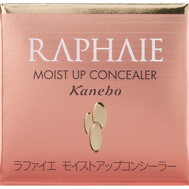
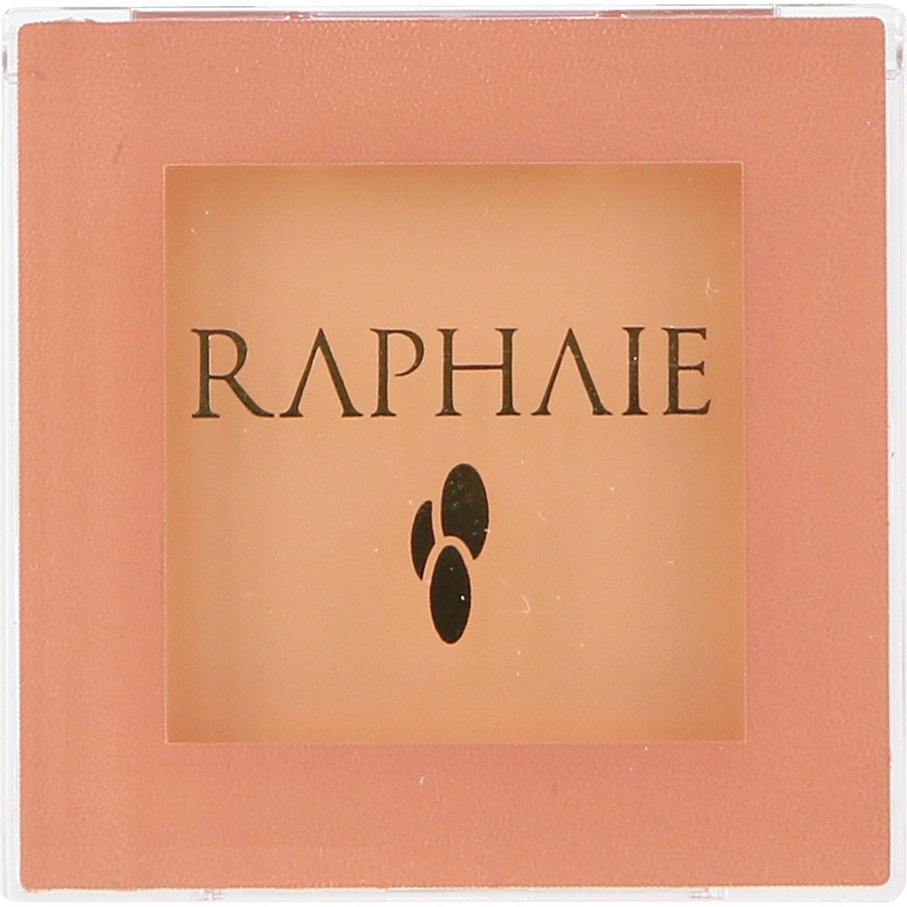

返回列表
产品名称：ラファイエ モイストアップ コンシーラー（目もと用）

カネボウ化粧品 ラファイエ モイストアップ コンシーラー（目もと用） ＬＢ
メーカー カネボウ化粧品
JANコード 4973167491188
商品の特徴
肌トラブルを優れたカバー力で簡単にカバーするトリートメントを含んだアンダーカバーです。
成分・分量
-
用法及び用量
＜使用方法＞
●ファンデーションのタイプにあわせて次の順序でお使いください。
［パウダータイプ］：ファンデーションの前
［乳化タイプ］：ファンデーションの後
●目もと用をクマにご使用の場合、指に少量とりクマの濃い部分から薄い部分にはみ出さないように薄くのばします。
●特に気になる部分には、少しずつ重ねづけするとカバー効果が高まります。